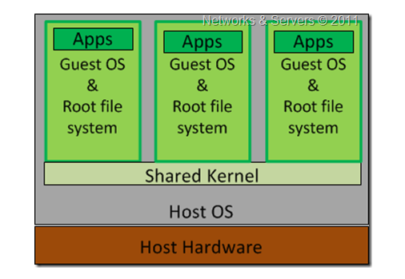

Docker and Containers
Dr. Javadi
Presented by Javad Rajabi and Amirhossein Najafizadeh
Spring 2023
Workshop Content
-
Containers
- OS System level virtualization
- History
- Isolation
- Architecture
- Cgroups
- Namespaces
- RunC
-
Docker
- Image
- Container
- Network
- Volume
- Dockerfile
- Dockerhub
- Swarm
OS System level virtualization
OS-level virtualization is a technology that partitions the operating system to create multiple isolated Virtual Machines (VM). An OS-level VM is a virtual execution environment that can be forked instantly from the base operating environment.
| Hypervisor? | How many OS? | |
|---|---|---|
| Hardware Level | Yes | Multi OS |
| OS Level | No | Single OS |
OS System level virtualization (cont.)
History
The concept of containers was started way back in 1979 with UNIX chroot.
It's an UNIX operating-system system call for changing the root directory of a
process and it's children to a new location in the filesystem which is
only visible to a given process.
The 2000s were alight with container technology development and refinement.
Google introduced Borg, the organization's container cluster management system, in 2003.
It relied on the isolation mechanisms that Linux already had in place.
Until 2004 that linux added the Cgropus and Namespaces which started a big
evolution in containers industery.
Containers: Isolation
Container isolation involves isolating a containerized application's runtime environment from the host operating system and other processes running on the host.
Containers: Architecture
A containerized architecture makes it possible to package software and its dependencies in an isolated unit, called a container, which can run consistently in any environment.

Cgroup
Cgroups (abbreviated from control groups) is a Linux kernel feature that limits, accounts for, and isolates the resource usage (CPU, memory, disk I/O, network, etc.) of a collection of processes. Engineers at Google started the work on this feature in 2006 under the name process containers.
Namespace
Namespaces are a feature of the Linux kernel that partitions kernel
resources such that one set of processes
sees one set of resources while another
set of processes sees a different set of resources.
Namespaces provide isolation of system resources, and cgroups allow for
fine‑grained control and enforcement of limits for those resources.
Containers are not the only way that you can use namespaces and cgroups.
RunC
RunC is a CLI tool for spawning and running containers on Linux according to the OCI specification. RunC is a universal container runtime created by Docker . View it on Github .
# creating a new containers
runc create mycontainerid
# view the container is created and in the "created" state
runc list
# start the process inside the container
runc start mycontainerid
# now delete the container
runc delete mycontainerid
Docker
Docker is a software platform that allows you to build, test, and deploy applications quickly. Docker packages software into standardized units called containers that have everything the software needs to run including libraries, system tools, code, and runtime. Docker created RunC in order to manage containers on a system.
Docker (cont.)

Docker: Image
A Docker image is a read-only template that contains a set of instructions for creating a container that can run on the Docker platform. An image is a file that represents a packaged application with all the dependencies needed to run correctly. In other words, we could say that a Docker image is like a Java class. Images are built as a series of layers. Layers are assembled on top of one another. Layers can also be cached.
Docker: Image (cont.)
Image commands:
# pull docker image
$ docker pull nginx:latest
# get a list of docker images
$ docker image ls
# build your docker image
$ docker build . -t amirhossein21/nginx:v0.1
# remove an image
$ docker image remove amirhossein21/nginx:v0.1
Docker: Container
A Docker container image is a lightweight, standalone, executable package of software that includes everything needed to run an application: code, runtime, system tools, system libraries and settings.
Docker: Container (cont.)
The key difference between a Docker image and a container is that a Docker
image is a read-only immutable template that defines how a container will be realized.
A Docker container is a runtime instance of a Docker image that gets created
when the $ docker run command is implemented.
Docker: Container (cont.)
Container commands:
# run a container
$ docker run -d -p 80:80 nginx:latest
# view containers
$ docker ps
# remove container
$ docker stop b5ee41eeb951
# get terminal inside a container
$ docker exec -it 39203d3aea67 bash
Docker: Network
Docker networking allows you to attach a container to as many networks as you like.
You can also attach an already running container.
There are three common Docker network types –
bridge networks, used within a single host, overlay networks,
for multi-host communication, and macvlan networks which are used to connect Docker
containers directly to host network interfaces.

Network (cont.)
Network commands:
# create network
$ docker network create node-app-network
# get a list of networks
$ docker network ls
# run a container on network
$ docker run --network=node-app-network -d -p 80:80 nginx:latest
# remove network
$ docker network remove node-app-network
Docker: Volume
A Docker volume is an independent file system entirely managed by Docker and exists as a normal file or directory on the host, where data is persisted. Volumes are the preferred way to persist data in Docker containers and services. Some use cases for volumes include: Sharing data among multiple running containers. If you don't explicitly create it, a volume is created the first time it is mounted into a container.

Volume (cont.)
# create volume
$ docker volume create redisvolume
# get a list of networks
$ docker volume ls
# run a container on network
$ docker run -v redisvolume:/data redis:latest
# remove network
$ docker volume remove redisvolume
Dockerfile
A Dockerfile is a text document that contains all the commands a user could call on the command line to assemble an image.
# select a base image
FROM nginx
# run a command
RUN apt-get upgrade
# execute commands
COPY html /var/www/html
# run a cmd command for container
CMD bash
Dockerhub
Docker Hub is the world’s largest repository of container images with an array of content sources including container community developers, open source projects.
# login
$ docker login
# push images
$ docker push amirhossein21/nginx:v0.1
Docker Compose
Docker Compose is a tool that was developed to help define and share multi-container applications. With Compose, we can create a YAML file to define the services and with a single command, can spin everything up or tear it all down. Network, volume and etc.
version: "3.9" # optional since v1.27.0
services:
web:
build: .
ports:
- "8000:5000"
depends_on:
- redis
redis:
image: redis
volumes:
- logvolume01:/data
volumes:
logvolume01: {}
Docker Swarm
A Docker Swarm is a container orchestration tool running the Docker application.
It has been configured to join together in a cluster.
One of the key benefits associated with the operation of a docker swarm is the
high level of availability offered for applications. Docker Swarm
lets you connect containers to multiple hosts similar to Kubernetes.
Docker Swarm has two types of services: replicated and global.